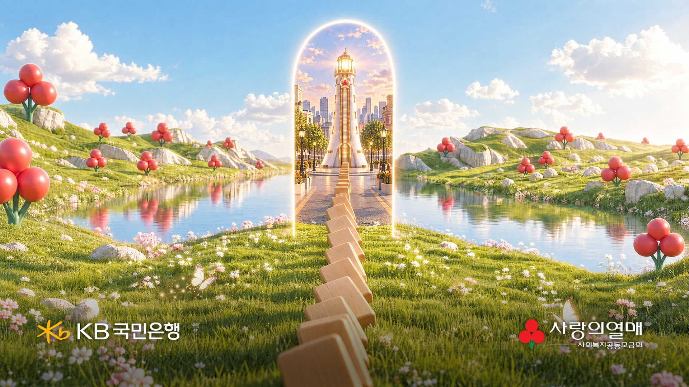
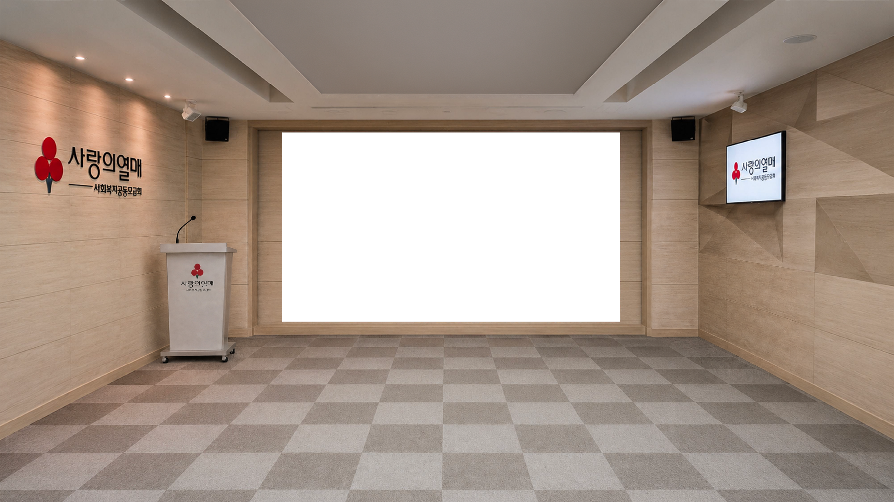

9월 16일 협의에서 나온 결정들입니다. 여기부터는 바뀌지 않는 것으로 두고 그 범위 안에서 만들었습니다.
연출이 도는 동안에는 로고가 한 번도 나오지 않습니다. 시작 화면과 마지막 화면에만 좌 · 우로 떠오르기 때문에, 기업이 바뀌어도 영상을 새로 뽑지 않습니다.


CMS 에서 배경이 빠진 PNG 한 장을 올리면, 미리 만들어 둔 등장 이펙트에 맞춰 어떤 비율의 로고든 같은 자리에 들어갑니다. 담당자가 하는 일은 그것뿐입니다.
이 하나만 정해 주시면 됩니다. 화면 속 연출과 컷 구성은 두 안이 완전히 같습니다.
성패는 이음매 하나입니다. 가운데 한 줄이라 맞출 지점이 하나뿐입니다. 제작 · 운송 · 설치 · 리허설이 붙습니다.
한 시스템 안에서 끝납니다. 판정과 화면이 같은 PC 위에 있어 현장에서 어긋날 지점이 적습니다.
키넥트는 화면 앞 도미노가 서 있는 자리 하나만 봅니다. 그 자리에 물체가 있는 동안에는 아무 일도 일어나지 않습니다. 사람의 손 · 제스처 · 위치는 읽지 않습니다.
도미노가 넘어가면 그 자리에서 사라집니다. 그 사라짐 하나가 트리거입니다. 물체의 유무만 보므로 조명 · 의상 · 주변 인원에 흔들리지 않고, 한 번 걸리면 끝까지 판정 없이 흐릅니다.
실물 도미노 · 스탠바이미 판넬 이미지는 사랑의열매 측 외부 의뢰로 진행하십니다. 다만 이 시안이 그 디자인의 기준이 되므로, 톤 가이드는 함께 드립니다.
지금은 그래픽카드 한 장으로 충분합니다. 다만 나중에 라이다나 터치 기반 콘텐츠를 얹을 때 카드 한 장만 더 꽂으면 되도록 메인보드 · 파워를 넉넉히 잡아 주십시오. 지금 드는 차이는 작고, 나중에 드는 차이는 PC 한 대 값입니다.
붉게 표시한 둘이 서로 묶여 있습니다. PC 가 먼저 들어와 있어야 현장 시뮬레이션을 돌릴 수 있고, 그 시뮬레이션이 끝나야 운용을 시작합니다. PC 반입이 밀리면 뒤의 두 칸이 통째로 밀립니다.